Explore Amman
A Brief History
Amman expanded from ancient Rabbath-Ammon and later Roman Philadelphia into the capital of Transjordan after 1921. Ottoman villas, Hashemite palaces, and 20th-century apartment blocks spread across jebels above the Roman theatre. Palestinian and regional migration swelled the population after 1948 and again in recent decades. Municipal archives, parish records, and surviving architecture help explain how the city connected to wider regional trade routes, court patronage, and modern civic rebuilding after industrial and wartime change.
Attractions Map
Top Sights & Activities
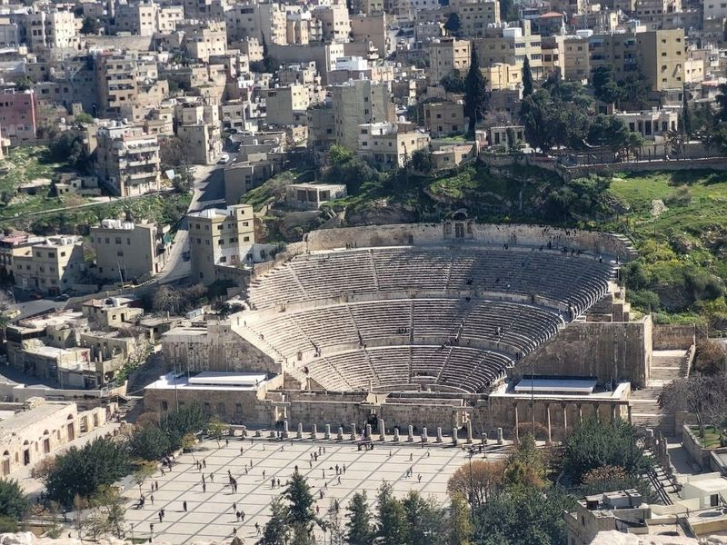
The Hashemite Plaza
The Hashemite Plaza, situated in downtown Amman, is a lively and bustling area surrounded by charming cafes, boutiques, and rooftop restaurants offering views. This historic plaza provides abundant cultural experiences such as folkloric dance performances and traditional Jordanian music. Despite being crowded at times, it offers a rewarding experience. The plaza features an expansive open area with pretty foundations, lovely gardens, and seating facilities.
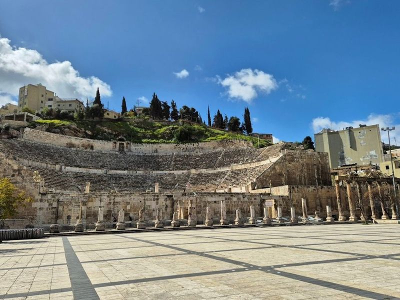
Roman Theater
The Roman Theater in Amman is a well-preserved amphitheater from the 2nd century AD, nestled in the downtown area. With a seating capacity of around 6,000 people, it showcases impressive Roman engineering and hosts various cultural events and performances. Adjacent to the theater are two museums: The Amman Citadel and Roman Theater Museum, which offer an extensive look into Jordan's history and cultural heritage through artifacts and exhibits from ancient civilizations.
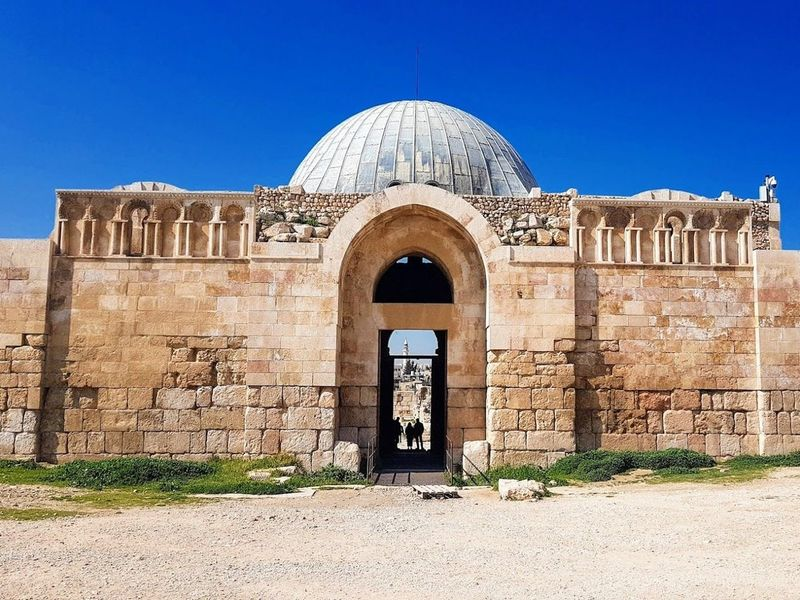
Amman Citadel
Amman Citadel is a renowned archaeological site in downtown Amman, boasting remnants of past civilizations and several notable buildings. Just below the Citadel lies Al-Balad, the old Downtown area where visitors can explore traditional Jordanian delights like rugs, cloth, kunafeh, Hashem (hummus and falafel), Zaatar, and perfumery stores. The citadel houses Jordan's Archaeological Museum with ancient assemblages from historic places around Jordan.
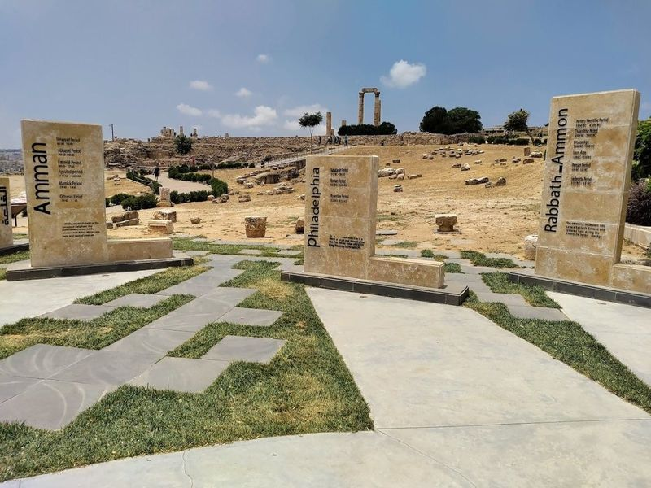
Roman Temple Of Hercules
The Roman Temple of Hercules, dating back to 162-166 CE, is a historic site located within the Citadel in Amman, Jordan. The temple's remains include two tall pillars and parts of the podium, as well as a large hand sculpture believed to be from a statue of Hercules that once stood over 12m tall. Situated on the highest hill in Amman, visitors can enjoy views of the city and glimpse into its Roman past.
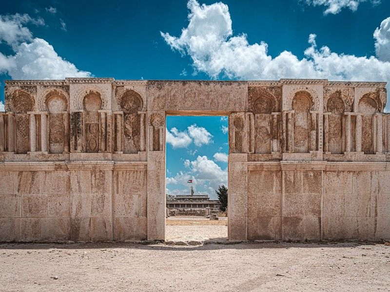
Umayyad Palace
The Umayyad Palace, located within the Amman Citadel grounds, is a remarkable 8th-century complex built over Roman ruins. The palace features a grand dome and has been beautifully restored, offering fantastic photo opportunities. Adjacent to the Temple of Hercules, it stands as evidence of Amman's long-standing history and is a for visitors and locals alike. Additionally, nearby remains of the Byzantine Church provide plenty of photo ops.
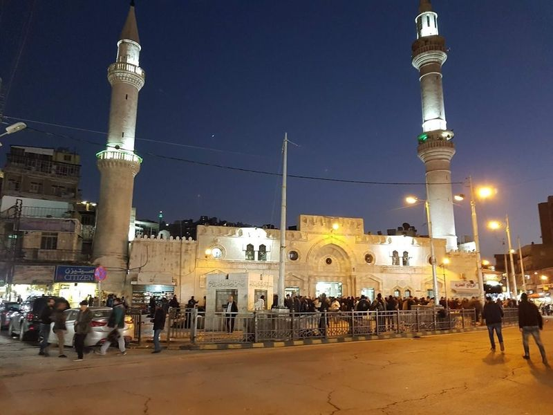
Grand Husseini Mosque
The Grand Husseini Mosque, located in Amman, Jordan, was built by King Abdullah I on the site of a mosque constructed by Omar Bin Al-Khattab around 640 CE. The mosque is a focal point for Friday afternoon protests and is crowded with worshippers on most days. Surrounding the mosque are bustling markets where various items can be purchased from street vendors.
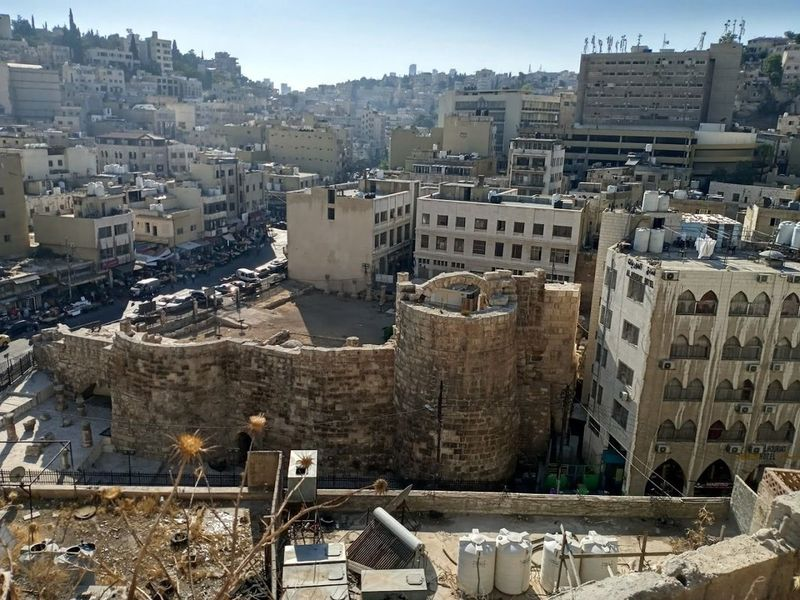
Roman Nymphaeum
The Roman Nymphaeum is a partially preserved ornamental fountain located in Downtown Amman, close to the Amphitheatre and Souq Al-Sukar. Dating back to 191 AD, this ancient structure was dedicated to the Nymphs and was believed to possess healing powers. Despite being forgotten for thousands of years, it has recently undergone restoration led by archaeologists and university students.
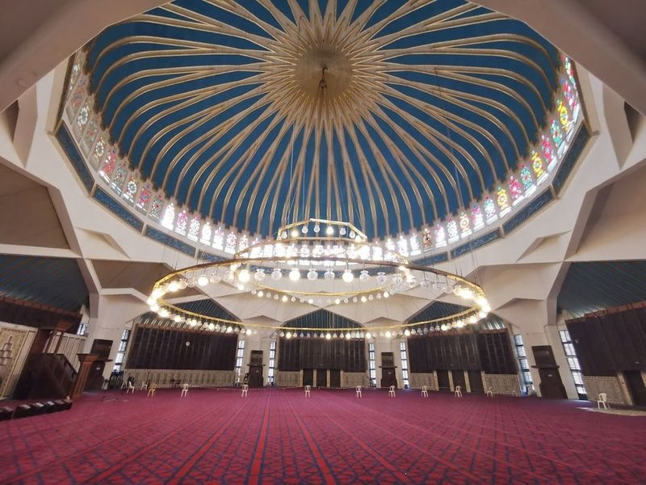
King Abdullah I Mosque
The King Abdullah I Mosque, named after the first King of Jordan, is a representation of the country's rich religious and cultural heritage. Built in 1982, this spacious 20th-century mosque features beautiful Islamic architecture with a blue-domed rooftop and soaring minarets. It is open to all visitors, regardless of their faith, offering an opportunity to learn about Islam and admire the serene ambiance within its walls.
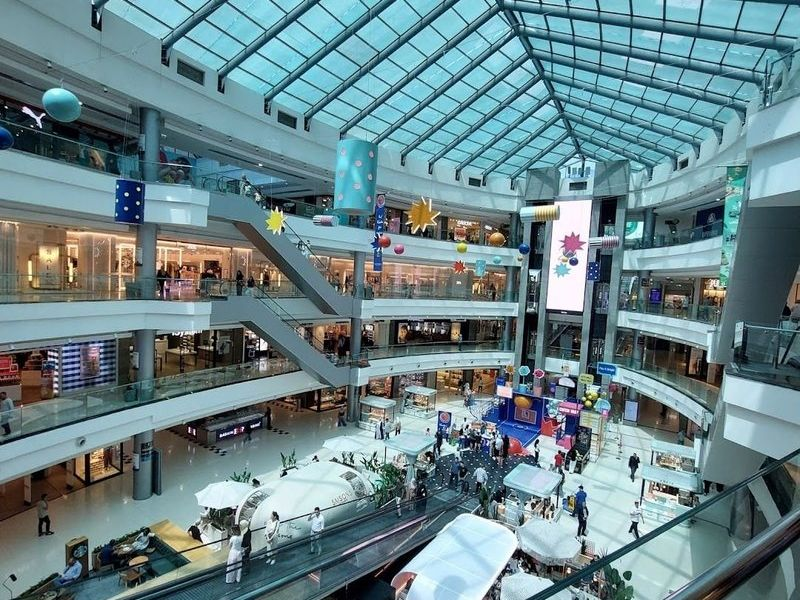
City Mall
City Mall is a popular indoor shopping destination in Amman, offering a diverse range of shops and dining options, as well as a multiplex cinema and a three-story parking garage. Owned by Al-Khayr Real Estate Investment Company, the mall features vibrant colors and spacious design. Opened in 2006, it covers 160,000 square meters and houses various retail outlets for fashion, jewelry, electronics, and more.
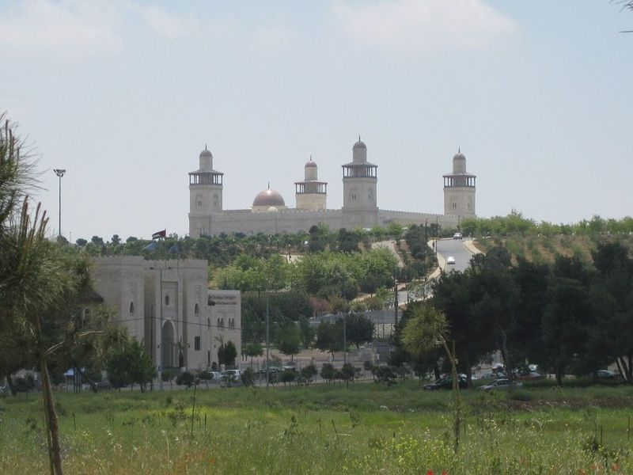
King Hussein Mosque
The King Hussein Mosque, a large and impressive structure, was built in 2005 to honor the late King Hussein. It boasts a mix of modern and traditional design elements, including four minarets and intricate stone carvings. The mosque is located in al-Hussein Gardens and houses the Prophet Muhammad Museum, which displays artifacts related to the prophet. The interior features elaborate carpet designs and large chandeliers.
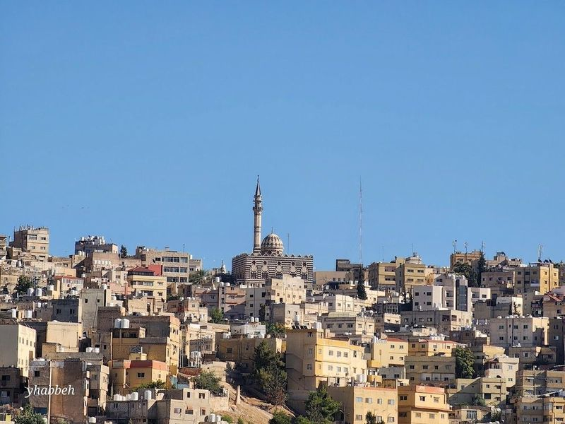
Abu Darwish Mosque
The Abu Darwish Mosque, situated on Jebel Al-Ashrafiyeh in Amman, is a modern religious site with a unique exterior made of alternating black and white stones. Although it may not boast extensive historical significance, the mosque features exquisite calligraphy work by a renowned artist within its interiors. Visitors can also explore a museum and admire the interior decorations.
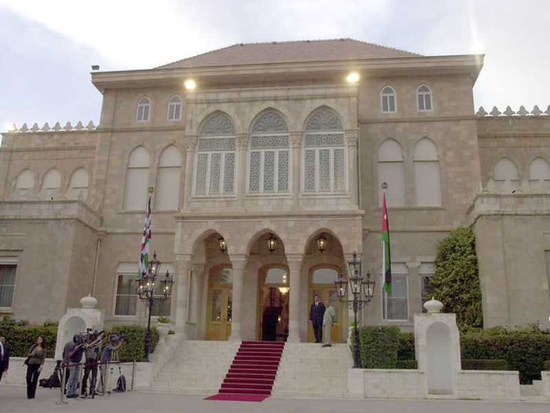
Raghadan Palace
The site forms part of Raghadan Palace's documented civic and cultural landscape within Amman, with archives and visitor information available from municipal or regional heritage authorities. The site forms part of Raghadan Palace's documented civic and cultural landscape within Amman, with archives and visitor information available from municipal or regional heritage authorities.
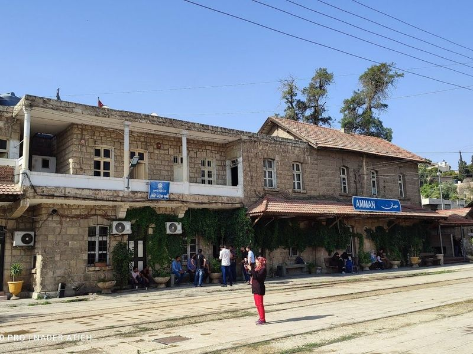
Amman Railway Station
Explore the remarkable collection of operational steam locomotives at Amman Railway Station, once an integral part of the pilgrimage route connecting the Ottoman Empire to Saudi Arabia and a significant component of the Great Arab Revolt in 1918. Enhancing your understanding of its historical significance, do not miss the opportunity to visit the museum located on-site. However, it would be more beneficial if there were additional English resources available.
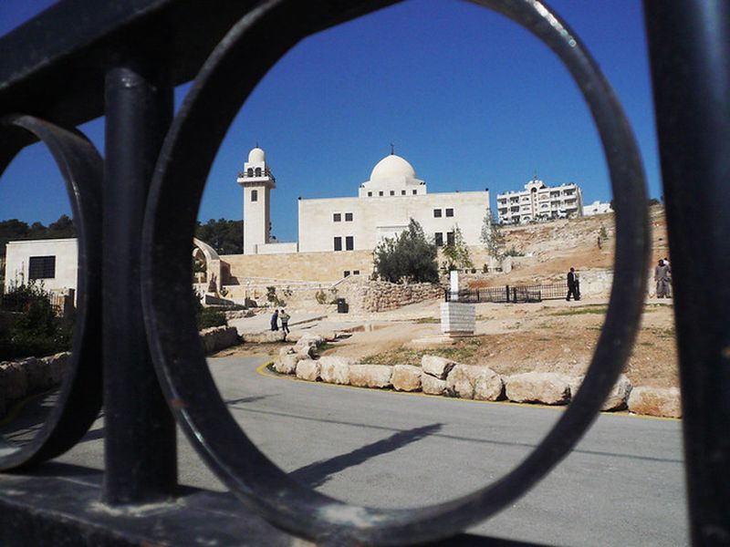
Cave Of The Seven Sleepers (Ashabul Kahf)
A historic and religious site believed to be the cave mentioned in the Quran, where seven young men slept for centuries. It's a place of pilgrimage and reflection. The site forms part of Cave Of The Seven Sleepers (Ashabul Kahf)'s documented civic and cultural landscape within Amman, with archives and visitor information available from municipal or regional heritage authorities.
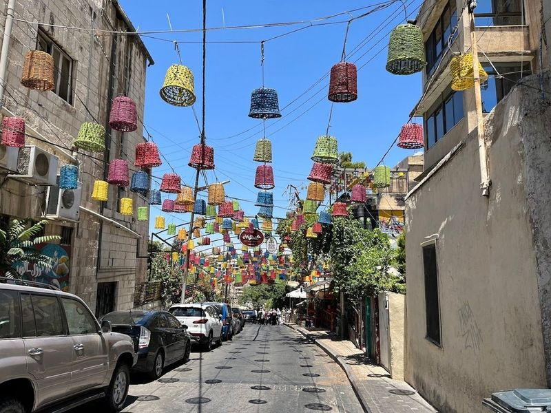
Rainbow St.
Rainbow Street is a vibrant and colorful promenade located in the heart of Amman, offering a lively mix of cafes, restaurants, shops, and rooftop bars. It's a popular spot for both locals and tourists, especially appealing to food enthusiasts, art lovers, and those seeking a vibrant nightlife scene. Families can also enjoy leisurely strolls while indulging in local treats and sweets.